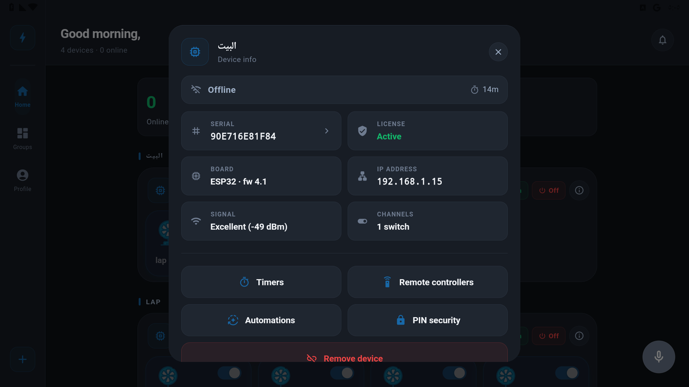

الإعداد الفني للبورد (Commissioning)
للفني / المركّب — من أول ما ترفع الكود على البورد، لحد ما توصّفله إنت بتتحكم في إيه وإزاي.
i مقدمة — يعني إيه إعداد فني؟
كل بورد فيه أطراف (GPIO) ممكن توصّل عليها ريليهات، مفاتيح، أو حسّاسات. الإعداد الفني هو إنك تقول للوحدة كل طرف ده بيعمل إيه: ده سويتش، ده دِمر، ده حسّاس حرارة… وكمان تظبّط طريقة التوصيل الكهربائي.
1 رفع الكود على البورد
- افتح الكود في Arduino IDE — فيه نسخة لكل شيب:
atsmart_esp32للـ ESP32 ·atsmart_esp8266للـ ESP8266. - من Tools → Board اختار البورد الصح (ESP32 Dev Module أو NodeMCU/Wemos D1).
- اضغط Upload وانتظر لحد ما يخلّص.
2 التشغيل والتوصيل بالتطبيق

شاشة تفاصيل الوحدة — البورد (ESP32)، السيريال، الـ IP، الإشارة، وعدد القنوات.
- وصّل الكهربا للوحدة — هتطلع شبكة واي فاي خاصة بيها (اسمها يبدأ باسم نقطة الإعداد).
- افتح تطبيق كوش سمارت ← ➕ إضافة جهاز ← اختار الوحدة.
- وصّلها بشبكة الواي فاي بتاعتك (2.4 جيجا).
- بعد ما تتصل، افتح تفاصيل الوحدة ← Configure unit (تهيئة الوحدة).
3 تعريف القنوات (ده سويتش… ده دِمر)
في صفحة Configure unit هتلاقي قائمة قنوات (Channels) مرقّمة. لكل قناة:
- اكتب اسم للقناة (مثلًا «نور الصالة»).
- اختار النوع (Type) من الأزرار: On/Off، Dimmer، RGB، Shutter، Fan، DHT، Sensor، IR…
- كرّر لكل قناة، وبعدين اضغط Save configuration.
أنواع القنوات المتاحة
| النوع | بيشغّل إيه | التحكم في التطبيق |
|---|---|---|
| On/Off (سويتش) | ريليه — إضاءة أو أي جهاز عادي | زرار تشغيل/إطفاء |
| Dimmer | إضاءة بتتحكم في سطوعها | شريط سطوع 0–100% |
| Fan | مروحة بسرعات | شريط سرعة |
| Shutter | ستارة / شتر كهربائي | فتح / قفل / إيقاف |
| RGB | لمبة/شريط ملوّن | اختيار اللون |
| DHT | حسّاس حرارة ورطوبة | قراءة (للعرض والأتمتة) |
| Sensor | حسّاس باب/حركة/تماس | حالة + إشعار/أتمتة |
| IR | مُرسِل/مُستقبِل أشعة | أوامر ريموت |
4 توزيع أطراف الـ GPIO
من صفحة الإعداد، اضغط أيقونة «GPIO pin mapping» (اللوحة الإلكترونية) فوق. هنا بتقول لكل قناة هي على أنهي طرف فعليًا في البورد.
- لكل قناة، حدّد رقم الـ GPIO الموصّل عليه الريليه/الحسّاس.
- لقنوات الـ RGB فيه أكتر من طرف (أحمر/أخضر/أزرق).
- حدّد كمان أطراف لمبات البيان (LED) وزر الإعداد لو مختلفة عن الافتراضي.
5 إعدادات التوصيل الكهربائي
دي أهم جزئية عشان المفاتيح والريليهات تشتغل صح حسب تركيبتك:
| الإعداد | الخيارات |
|---|---|
| وضع المفتاح (Switch Mode) | عادي / ثلاثي (3-way) / ضغط (Push) |
| توصيل المفتاح | Pull-up / Pull-down |
| الريليه | Active-High / Active-Low |
| زر الإعداد (Config button) | Pull-up / Pull-down |
| اسم نقطة الواي فاي (AP) | اسم الشبكة وقت الإعداد |
Pull-up و Pull-down — إيه الفرق؟
Pull-up (الأكثر شيوعًا): طرف الدخل بيبقى مرفوع (HIGH) في وضع الراحة، والمفتاح لما يتقفل بيوصّله بالأرضي (GND). ده الوضع الافتراضي لمعظم التركيبات.
Pull-down: طرف الدخل بيبقى منخفض (LOW)، والمفتاح لما يتقفل بيوصّله بالموجب (VCC). بيتستخدم لما التوصيلة معكوسة أو فيه مقاومة سحب خارجية.
الريليه — Active-High ولا Active-Low؟
Active-Low: الريليه بيشتغل لما الإشارة تبقى LOW. ده شائع في بوردات الريليه ذات العزل الضوئي (Opto-isolated).
Active-High: الريليه بيشتغل لما الإشارة تبقى HIGH.
وضع المفتاح (Switch Mode)
| الوضع | امتى تستخدمه |
|---|---|
| عادي | مفتاح عادي — الريليه بيتبع حالة المفتاح. |
| ثلاثي (3-way) | مفتاحين بيتحكموا في نفس اللمبة من مكانين مختلفين. |
| ضغط (Push) | زر لحظي — كل ضغطة بتبدّل الحالة (تشغيل/إطفاء). |
6 الريموت اللاسلكي (RF / IR) — اختياري
لو الوحدة فيها مستقبل 433MHz أو أشعة (IR)، حدّد طرف الـ GPIO بتاع كل واحد في صفحة الإعداد (RF GPIO / IR GPIO). بعدها تقدر تربط الأزرار من صفحة الريموتات في التطبيق بخاصية «تعلّم الزر».
7 الحفظ والقفل
- راجع القنوات والأنواع والـ GPIO وإعدادات التوصيل.
- اضغط Save configuration — بيتبعت للوحدة ويتسجّل في الـ Info File.
- الوحدة دلوقتي «مُعرّفة» وجاهزة، وأجهزتها بتظهر بأسمائها وأنواعها الصح.
⌨ طريقة الـ USB — للمتقدّمين
تقدر تعمل كل ده من كابل الـ USB مباشرة (من غير واي فاي) عن طريق الـ Serial Monitor على 115200. اكتب help تشوف الأوامر:
| الأمر | بيعمل إيه |
|---|---|
info | يعرض الملف المُعرّف (إعدادات الهاردوير) |
channels | يعرض كل قناة: الرقم، النوع، الاسم |
config | إعدادات الواي فاي/الحساب/العامة |
name 2 المطبخ | تسمية القناة رقم 2 |
{"hwsettings":{"switchMode":0,"switchPullup":true,"relayActiveLow":false}} | تظبيط التوصيل مباشرة |
? حل مشاكل التوصيل
المفتاح الخارجي مش شغّال؟
بدّل Pull-up ↔ Pull-down، وتأكد من وضع المفتاح (عادي/ثلاثي/ضغط) حسب تركيبتك.
الريليه شغّال بالعكس؟
غيّر Active-High ↔ Active-Low.
القناة ظاهرة بنوع غلط؟
ارجع لصفحة Configure unit وغيّر النوع، ثم احفظ.
الجهاز مش بيحفظ الحالة بعد فصل الكهربا؟
الوحدة بتستعيد آخر حالة تلقائيًا عند التشغيل. لو مش بيحصل، تأكد إن الإعداد الفني اتحفظ (Info File).